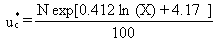
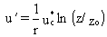
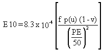
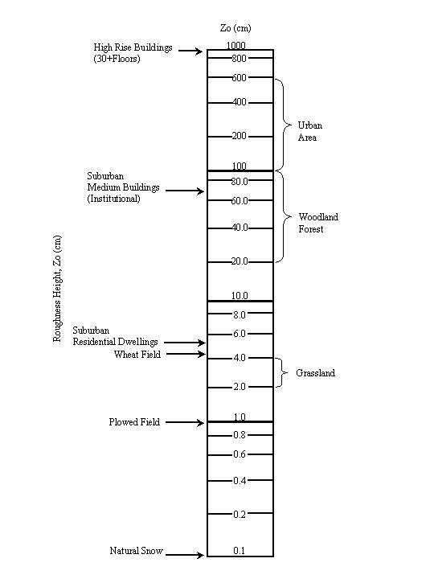
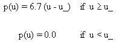
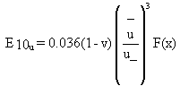
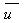
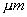
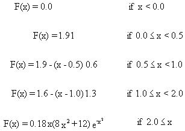

2.2 WIND EROSION AND MECHANICAL SUSPENSION
Cowherd et al. (1985) define the steps for determining potential respirable
particulate emission from wind erosion. The soil particle size distribution,
apparent roughness of the site, vegetation cover, presence of a crust on
the soil, and presence of nonerodible elements (e.g., large stones) are
used to define the potential for suspension. Depending on the results of
their procedure, the site is characterized as having 1) unlimited erosion
potential, 2) limited erosion potential, or 3) no erosion potential.
The methodology uses different formulations for the two cases with wind
erosion potential. Cowherd et al. (1985) suggest that if the site is completely
covered with vegetation or if there is a thick crust (or a wet, saturated
soil) and if no mechanical disturbances occur at the site, it can be assumed
that no contaminants are suspended. However, for certain contaminants,
even very small suspension rates from well-stabilized surfaces may be significant.
These wind erosion formulations give results comparable to using resuspension
factors over a range of surfaces from bare, unstabilized surfaces to well-stabilized
surfaces (Whelan et al. 1989).
The potential for wind erosion is quantified in terms of a threshold friction
velocity. The greater the value of the threshold friction velocity for
a site, the lower the potential for particle suspension. The threshold
friction velocity for the contaminated area is determined by knowing the
mode of the aggregate particulate size distribution (which is derived from
the soil composition) and using a formula derived from the graphical relationship
given by Gillette et al. (1980):

(1)
where
u*c = threshold friction velocity (m/s)
X = aggregate size distribution (mm)
N = nonerodible elements correction factor (dimensionless).
The
aggregate size distribution is estimated using X = (0.0106)(Percent Sand)
+ 0.05. From the viewpoint of increasing the potential for suspension,
this relationship provides relatively realistic estimates for soils with
greater than 75% sand content. For other soils, the relationship provides
relatively conservative estimates that are more typical of disturbed soils
than undisturbed soils.
The correction factor in Equation 1 allows for the effects of any non-erodible
elements in the contaminated area. This correction factor for the fraction
of surface coverage is estimated on graphical results given by Cowherd
et al. (1985), derived from wind tunnel studies by Marshall (1971). As
the silhouette area of nonerodible elements increases, so does the threshold
friction velocity. If the threshold friction velocity is less than 0.75
m/s, the area has unlimited erosion potential; otherwise, the area has
only limited erosion potential. In MEPAS, the emission rate for a surface
is computed as the sum of the unlimited and limited erosion emissions.
The emission rate terms were not summed in the original methodology described
by Cowherd et al. (1985).
Once the threshold friction velocity has been determined, the critical
wind speed at a given height above the surface can be determined using
the equation

(2)
where
u´ = critical wind speed at 7-m height (m/s)
r = von Karman constant (0.4; dimensionless)
z = reference height above the surface (7 m)
zo = surface roughness length (m).(a)
The
critical wind speed is one of the parameters used below to define the erosion
potential. The value of z recommended by Cowherd et al. (1985) is 7 m.
The surface roughness length of the site, zo, is related to
the size and spacing of the roughness elements in the area. Figure 2.1
illustrates zo for various surfaces (Cowherd and Guenther 1976).
For estimating particulate emissions from a contaminated area having limited
wind-erosion potential, the following equation is used to predict potential
emissions:

(3)
where
E10 = annual average emission rate per unit surface area (g/m2/hr)
f = frequency of mechanical disturbances (number/months)
u = observed maximum wind speed for periods between disturbances corrected
to a reference height of 7m (m/s)
p(u) = erosion potential (g/m2)
v = vegetation coverage on surface (fraction)
PE = Thornthwaite's Precipitation-Evaporation (PE) Index (dimensionless).
The
frequency of disturbances per month, f, is defined as the number of actions
that could expose fresh surface material. If the entire area is not disturbed,
this frequency should be weighted to reflect the actual area exposed. A
disturbance could be vehicular traffic, plowing or turning of the
Units for the surface roughness length are listed as meters (m) for consistency
in Equation 1; the common unitsfor this variable centimenters (cm) as presented
in Figure 2.1.

FIGURE 2.1. Roughness Lengths for Various Surfaces (Cowherd et al. 1985)
soil, mining, or construction. The erosion
potential, p(u), depends on the maximum wind speed, u, so that

(4)
The vegetation fraction varies from 0 for bare ground to 1 for total coverage.
The Thornthwaite's PE Index is used as a moisture-correction parameter
for wind-generated emissions. Cowherd et al. (1985) provide a map with
values of PE for all regions in the contiguous United States (Figure 2.2).
For unlimited erosion potential, the relationship
for the surface emission rate is

(5)
where
 = mean annual wind speed (m/s)
F(x) = integration function
E10u = annual average emission rate per unit surface area (g/m2).
The vertical flux of particles smaller than 10 
in diameter is assumed to be proportional to the cube of the horizontal
wind speed. This relationship was originally developed from measurements
made by O'Brien and Rindlaub (1936) in studies at the mouth of the Columbia
River and later measurements made by Bagnold (1941) in the Egyptian desert.
Chepil (1951) found this same relationship using results from wind-tunnel
experiments.
The integration function, F(x), comes from the cubic relationship of the
vertical transport of particles and the wind speed. It is defined in graphical
format by Cowherd et al. (1985). This relationship can be broken into the
following discrete parts:

(6)
where x = 0.886 u'/.